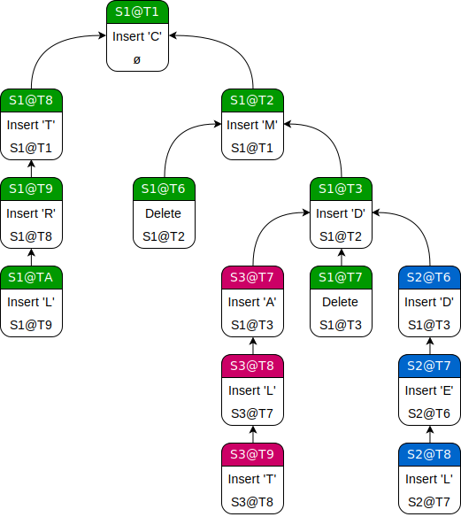

<!DOCTYPE html>
<html lang="en">
  <head>
    <meta charset="utf-8" />
    <meta name="viewport" content="width=device-width, initial-scale=1.0, maximum-scale=1.0, user-scalable=no" />

    <title>CRDT</title>
    <link rel="shortcut icon" href="./favicon.ico"/>
    <link rel="stylesheet" href="./dist/reveal.css" />
    <link rel="stylesheet" href="./dist/theme/black.css" id="theme" />
    <link rel="stylesheet" href="./css/highlight/zenburn.css" />
    <link rel="stylesheet" href="./static//custom.css" />

  </head>
  <body>
    <div class="reveal">
      <div class="slides"><section  data-markdown><script type="text/template">
<link rel="stylesheet" href="https://use.fontawesome.com/releases/v5.0.13/css/all.css" integrity="sha384-DNOHZ68U8hZfKXOrtjWvjxusGo9WQnrNx2sqG0tfsghAvtVlRW3tvkXWZh58N9jp" crossorigin="anonymous">
<h1>CRDT</h1>
</script></section><section  data-markdown><script type="text/template">
<b>C</b>onflict-free <b>R</b>eplicated <b>D</b>ata<b>T</b>ype
</script></section><section  data-markdown><script type="text/template">
<h2>I. Why?</h2>
</script></section><section  data-markdown><script type="text/template">
__CAP Theorem__

Consistency, Availability, resistance to Partition. Choose two.
Collaboration using computers is hard.
</script></section><section  data-markdown><script type="text/template">
But collaboration is now crucial. Between humans, using Google Docs, but also between machines,
using clustered databases.
</script></section><section  data-markdown><script type="text/template">
<h2>II. State of the Art</h2>
</script></section><section  data-markdown><script type="text/template">
<h3>Operational Transformations</h3>
</script></section><section  data-markdown><script type="text/template">
The idea is to generate operations on the client then funnel them all through a central
server who will adjust them based on the operations of the other clients and then
distribute them :


</script></section><section  data-markdown><script type="text/template">
This is the method used by Google Docs.

| + | - |
|---|---|
|Easier to implement | Requires central server |
|Less memory overhead | Limited scaling capabilities |
</script></section><section  data-markdown><script type="text/template">
<h3>CRDTs</h3>
</script></section><section  data-markdown><script type="text/template">
Clients are connected in a peer-to-peer fashion, the network can be intermittent,
but cannot be adversarial.  

The objective is that after enough time, if all the clients managed to exchange
with each other, every client has the same state (the state converges).
</script></section><section  data-markdown><script type="text/template">
__State-based :__ exchange the whole state and merge it with your own (CmRDT)  
  
__Operation-based :__ exchange only operations and ensure it converges (CvRDT)  
</script></section><section  data-markdown><script type="text/template">
1. Counter-based : grow-only counter, LWW counter
2. Set-based : grow-only set, 2P-set
3. More complex structures are based on these two !
</script></section><section  data-markdown><script type="text/template">
This is still a very active research area.  
If you need a PhD...
</script></section><section  data-markdown><script type="text/template">
<h2>III. Applications</h2>
</script></section><section  data-markdown><script type="text/template">
__Databases__  
Redis, Riak, Apollo
</script></section><section  data-markdown><script type="text/template">
__Frameworks__  
Phoenix, Y.js
</script></section><section  data-markdown><script type="text/template">
__Applications__  
Apple Notes, Atom Editor, League of Legends chat, SoundCloud comments
</script></section><section  data-markdown><script type="text/template">
<h2>IV. Example : Causal Trees</h2>
</script></section><section  data-markdown><script type="text/template">
Imagine a text as a string of ordered letters, identified by unique IDs :

```
H    e    l    o
0.2  0.4  0.6  0.8
```
</script></section><section  data-markdown><script type="text/template">
Adding a letter requires a new ID, correctly ordered (IDs must be dense) :

```
H    e    l    l    o
0.2  0.4  0.6  0.7  0.8
```
</script></section><section  data-markdown><script type="text/template">
To make a CRDT you need to solve following problems :
- each ID must be unique and there must be a partial order
- each client must be able to generate IDs idependently
</script></section><section  data-markdown><script type="text/template">
To make IDs unique and generatable, use a random host ID and an incrementing timestamp.
</script></section><section  data-markdown><script type="text/template">
To ensure ordering, every letter is associated with its cause, building a *causal* tree.


</script></section><section  data-markdown><script type="text/template">
To get the final text, walk the tree using DFS.
</script></section><section  data-markdown><script type="text/template">
DEMO !  

<a href="https://exenon.github.com/crdt-presentation/crdt.html">https://exenon.github.com/crdt-presentation/demo.html</a>

</script></section></div>
    </div>

    <script src="./dist/reveal.js"></script>

    <script src="./plugin/markdown/markdown.js"></script>
    <script src="./plugin/highlight/highlight.js"></script>
    <script src="./plugin/zoom/zoom.js"></script>
    <script src="./plugin/notes/notes.js"></script>
    <script src="./plugin/math/math.js"></script>
    <script>
      function extend() {
        var target = {};
        for (var i = 0; i < arguments.length; i++) {
          var source = arguments[i];
          for (var key in source) {
            if (source.hasOwnProperty(key)) {
              target[key] = source[key];
            }
          }
        }
        return target;
      }

      // default options to init reveal.js
      var defaultOptions = {
        controls: true,
        progress: true,
        history: true,
        center: true,
        transition: 'default', // none/fade/slide/convex/concave/zoom
        plugins: [
          RevealMarkdown,
          RevealHighlight,
          RevealZoom,
          RevealNotes,
          RevealMath
        ]
      };

      // options from URL query string
      var queryOptions = Reveal().getQueryHash() || {};

      var options = extend(defaultOptions, {"transition":"none","slideNumber":true}, queryOptions);
    </script>


    <script>
      Reveal.initialize(options);
    </script>
  </body>
</html>
